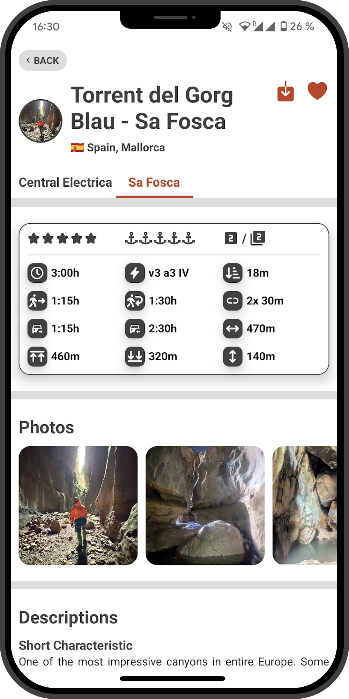
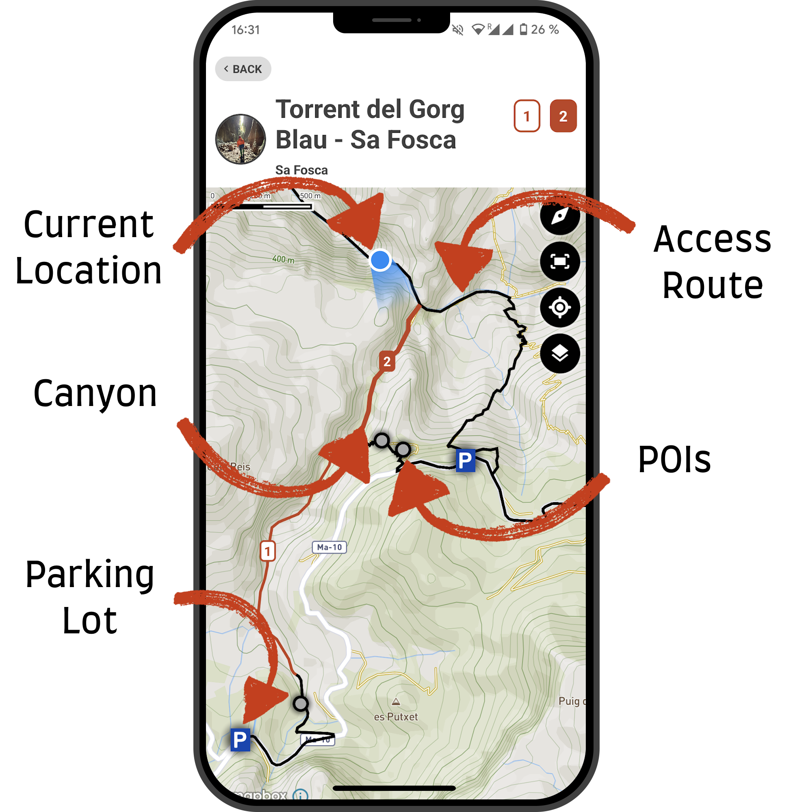
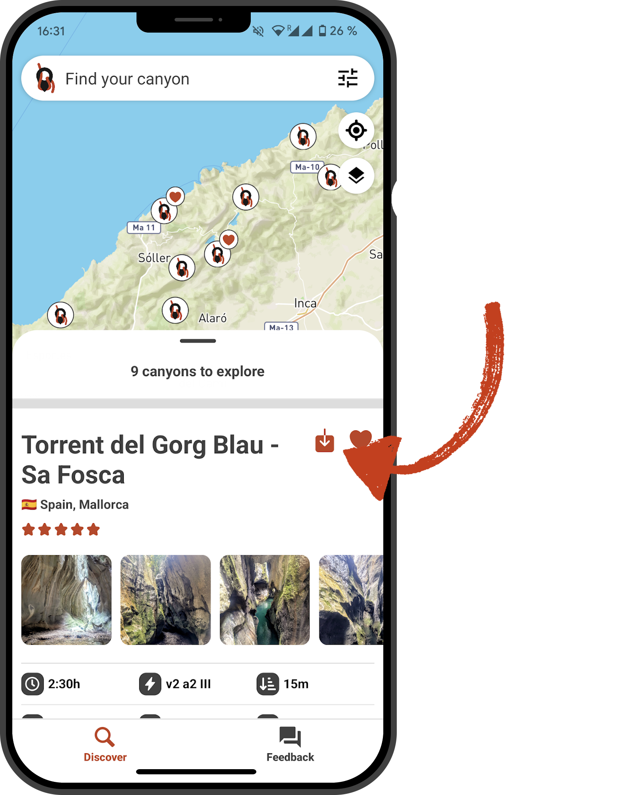
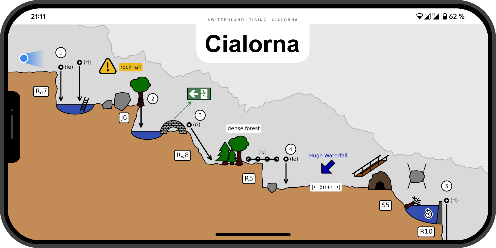
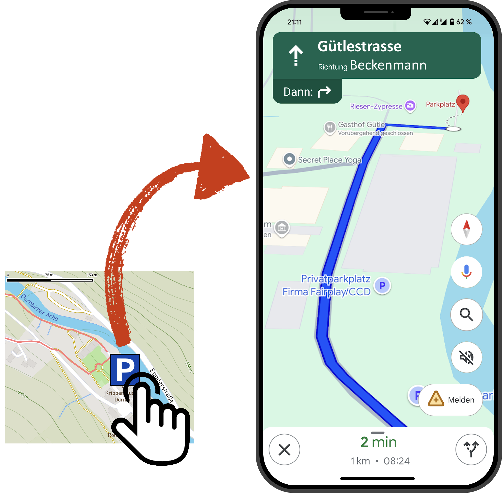
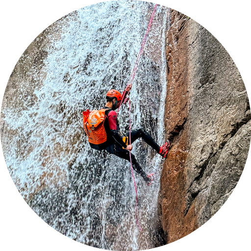
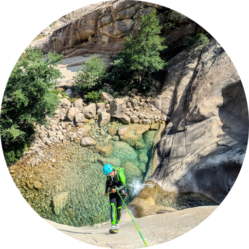
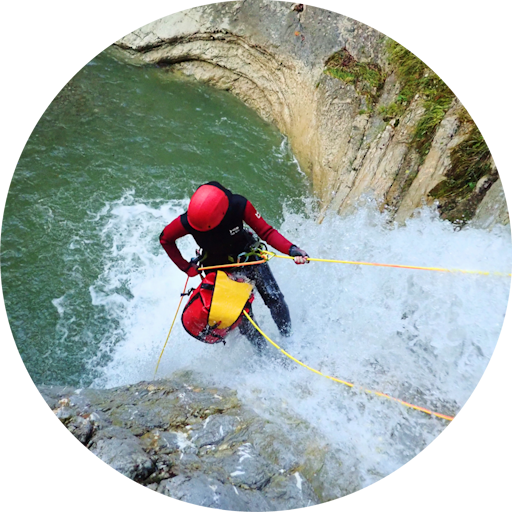

All you need. In one app.
Your next canyoning adventure starts here! With detailed topographies, interactive maps, and comprehensive canyon information, planning your next canyoning trip has never been easier. Whether you're a seasoned pro or a first-time explorer, our app equips you with everything you need for a safe and unforgettable journey. Find your perfect route, prepare with confidence, and let the adventure unfold. Dive into the world of canyoning like never before!

Experience the convenience of having all your canyoning needs in one place. From trip planning and navigation to accessing detailed canyon information, our app is your ultimate canyoning companion.

Navigate with confidence using our detailed tracks that show precise access routes to each canyon. Whether you're finding trailheads or understanding approach paths, our app ensures you never lose your way.

Stay prepared even in remote areas with offline access to crucial canyon details. Download maps, topographies, and route information in advance to stay informed no matter where you are.

Get clear, high-quality topos designed specifically for canyoning. These topographies offer detailed insights and visual data, making it easier to plan your adventures safely and navigate through the canyon.

Our app provides direct navigation via Google Maps with one click to the nearest parking lot for each canyon. Spend less time searching and more time enjoying your adventure.
With our free-to-use topo creator, you can design professional canyon topos in just a few clicks. Add rappels, jumps, slides, pools, and even details like trees, houses, bridges, emergency exits, and many more.


This app is a game-changer! I used to spend hours planning routes, but now everything I need is in one place. The maps and topos are super detailed, and I love the easy usage!
POSTED ON GOOGLE

As someone new to canyoning, this app has been a lifesaver. The clear info of the access routes gave me the confidence to find the start of the canyons and explore on my own. Highly recommended!
POSTED ON APP STORE

Finally, an app that understands what canyoneers need! The topos are spot-on and easy to read and the offline maps have saved me more than once in remote areas. A must-have for any serious adventurer.
POSTED ON PLAY STORE